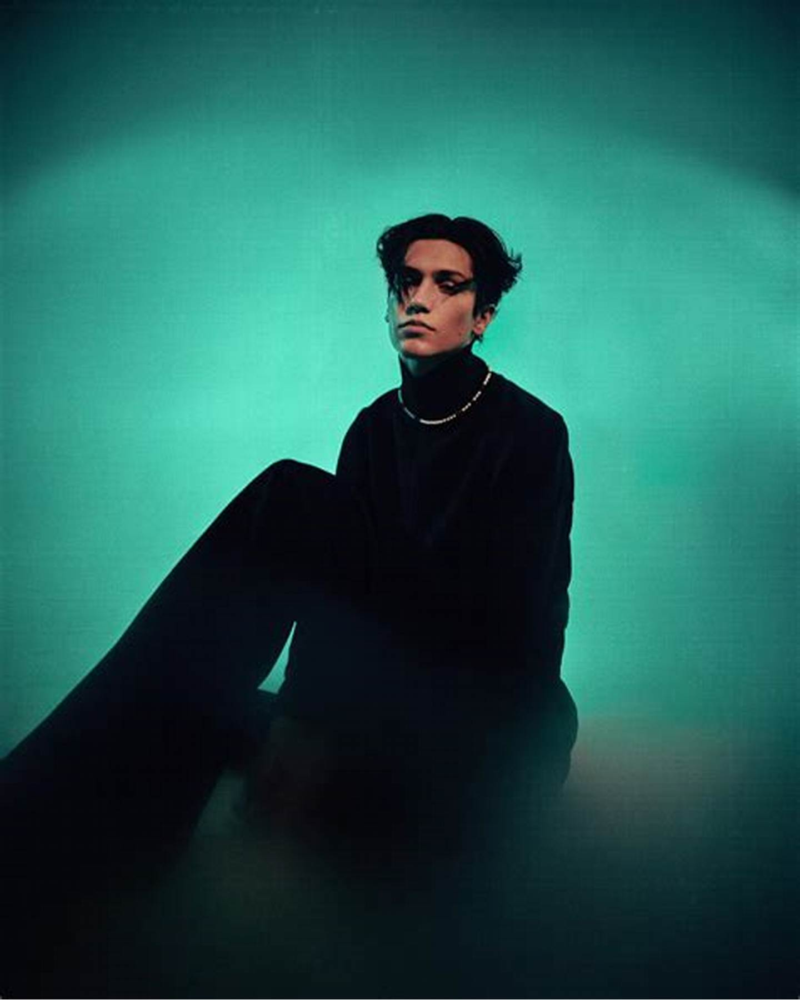
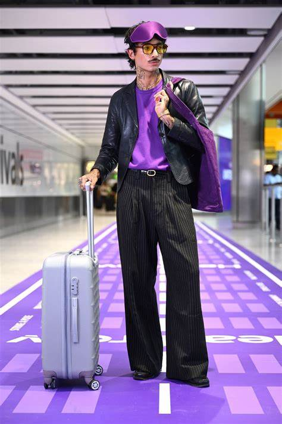

Tom's calm nature and eagerness to create; while still maintianing a high level of professionalism; has seen him slide into the fashion industry - photographing campaigns, look books, editorials, portraits, short films and TV commercials.
Jack Thompson features in a story crossing bridges for ID Magazine shot by Maxwell Tomlinson, style by Louise Prier Tisdall.
As London Fashion Week has come to an end , we've made a list of our fresh new faces & showgirls who have hard walked for some of the biggest designers.
